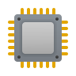

지능이란?
‘목적에 맞게 합리적으로 생각하여 효율적으로 행동할 수 있는 정신능력’으로 정의하며, 유전적 소인과 주변 환경과의 상호작용을 통해 발달하므로 선천적으로 타고난 고정불변의 능력으로 보지 않습니다. 따라서 지능검사의 결과는 특정 시점에 관찰된 개인의 지능수준을 수치화한 것이며 개인차를 고려한 교육을 계획하는 데 도움을 줄 수 있습니다.
지능검사(General Inteligence Scale)란?지능 관련 이론과 기존의 지능검사를 고찰하여 인간의 지적 능력을 유동성 지능, 결정성 지능, 작업기억력, 시·공간 지각력, 속도처리 능력의 5개 영역으로 구분하여 개인의 능력 수준에 대한 정보를 제공합니다. 아래의 지능검사결과는 지적 영역을 세분화하여 기술했습니다. 영역별 내용에 기초하여 각 영역간의 발달 정도 및 균형을 살펴보는 것이 지적 능력을 파악하는데 도움이 될 것 입니다.
Part별 원점수
| Part 1 | Part 2 | Part 3 | Part 4 | Part 5 | Part 6 | Part 7 | Part 8 | Part 9 | |
|---|---|---|---|---|---|---|---|---|---|
| 문항수 | 10 | 10 | 1 | 2 | 10 | 10 | 11 | 15 | 10 |
| 정답수 | 10 | 10 | 1 | 2 | 10 | 10 | 11 | 15 | 10 |
| 오답수 | 10 | 10 | 1 | 2 | 10 | 10 | 11 | 15 | 10 |
종합결과
IQ점수(지능지수)는 비교가 가능하도록 원점수를 평균이 100, 표준편차가 15가 되도록 변환한 표준점수입니다.
지능지수가 90~109점에 해당하면 평균적인 범위에 해당하는 것으로 볼 수 있으며, 높을수록 지적 능력이 우수한 것이고, 낮을수록 지적 능력이 약하다는 의미입니다.
결과해석
내용
검사소견
내용
학습자의 자기주도학습역량진단 분석결과
유동성 지능
IQ점수 : 25/보통
- 분명한 목적을 갖고 의도적이고 계획으로 사고하며 새로운 문제해결에 필요한 인지적 에너지를 적재적소에 할당하여 문제를 해결하는 능력으로 경험이나 교육과는 비교적 관계가 적은 잠재능력을 말합니다.
- 계획능력, 추리능력, 개념정립 능력, 분류, 가설설정 및 검증, 관계규명, 인과관계설명, 결과 및 결론유추, 문제해결, 정보처리, 연역추리, 귀납추리, 가추추리, 수리추리(산술, 연산 등) 물질의 보존성에 대한 개념이해를 포함합니다.
- 생명과학, 생물학, 물리학, 화학, 공학, 수학 등 기초과학 계열의 학습에 중요한 영역입니다.
결과해석
내용
검사소견
내용
결정성 지능
IQ점수 : 25/보통
- 교육, 문화, 사회, 환경적 영향을 가장 강하게 받는 지적 능력으로 개인이 환경과 교육을 통해 경험하게 되는 언어능력에 의해 크게 좌우되는 능력으로 문화적 지식과 기능을 기초로 하는 문제해결 능력을 말합니다.
- 어휘력, 문장이해력, 문법, 일반상식, 언어청취 및 의사전달 능력, 사회문화적 정보 등이 이에 해당하며, 이미 습득한 지식이나 기능을 반영하므로 나이가 들수록 더 발달하는 경향을 보입니다.
- 인문학, 사회과학 등 문학 계열의 학습에 중요한 영역입니다.
결과해석
내용
검사소견
내용
작업 기억력
IQ점수 : 25/보통
- 의도하는 바를 계획하거나 실행할 때, 특정의 결과를 도출하기 위해 필요한 정보를 일시적으로 의식 속에 활성화한 상태에서 그 정보를 필요에 따라 조작, 변형, 처리하는 능력을 말합니다.
- 보다 높은 수준의 정보처리를 위해 전제되는 청각적 주의 및 집중력, 단기 기억력 등의 능력을 포함하며, 용량이 작고 지속시간이 제한적이며 충동적 경향 혹은 불안과 같은 정서의 영향을 받을 가능성이 높습니다.
- 작업 기억력이 좋으면 한정된 용량과 제한된 지속시간을 활용하는 인지기능의 유연성이 좋다는 의미입니다.
결과해석
내용
검사소견
내용
시·공간 지각력
IQ점수 : 25/보통
- 시각적 자극을 체계적으로 정리하며 분석하고 통합하는 능력, 비언어적 개념형성과 추론, 시각적 자극 내에서 전경과 배경을 구별해내는 능력, 사물의 본질, 비본질 부분을 구별하는 능력을 말합니다.
- 입체적 물체나 도형, 물체의 평면도 등을 상상으로 방향을 전환하고 모양을 변형하고 위치를 움직여서 변형된 모양과 원래의 모양과의 관계를 이해하는 능력입니다.
- 개별적인 부분간의 내적 관계를 예견해서 전체 모양을 파악하는 능력 등 동시처리 능력과 상관이 있습니다.
결과해석
내용
검사소견
내용

속도처리력
IQ점수 : 25/보통
- 사물을 같은 종류나 특징, 크기 별로 분류하거나 숫자를 순서대로 정렬하는 것처럼 복잡한 사고 없이 단순한 시각적 주의력과 집중력으로 처리가 가능한 기계적인 단순사무를 주어진 시간 안에 신속히 처리해 내는 능력을 말합니다.
- 반복적으로 되풀이 되는 일을 오차 없이 능숙하게 처리하는 기능으로 시각적 변별력, 시각-운동 협응력, 에너지 수준 및 성취동기 수준과 밀접한 연관이 있으며, 우울과 같은 정서의 영향을 받을 가능성이 높습니다.
- 속도처리 능력이 좋으면 주어진 과제를 신속히 처리하는 등 정신운동의 기민성이 좋다는 의미입니다.
결과해석
내용
검사소견
내용